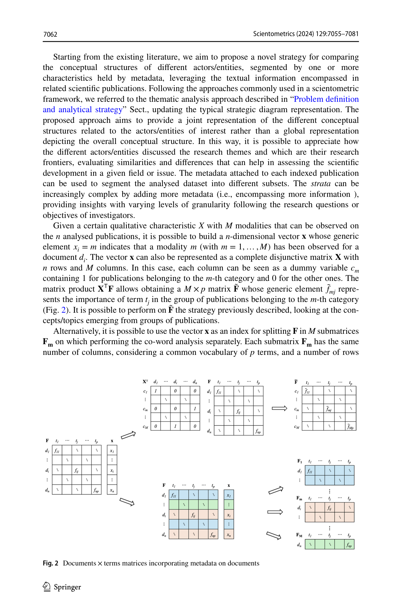
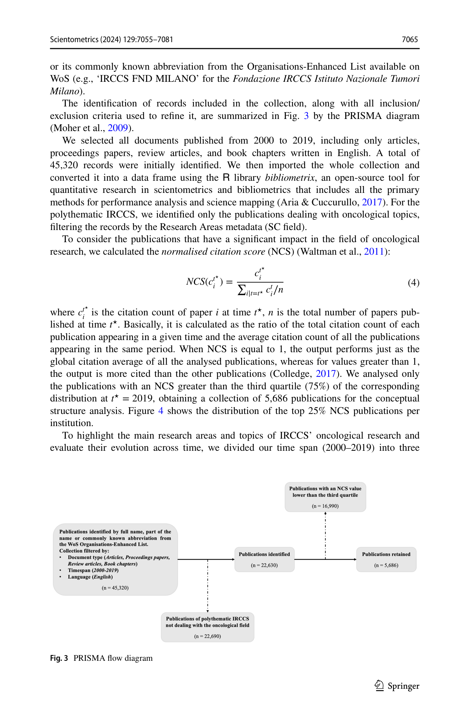
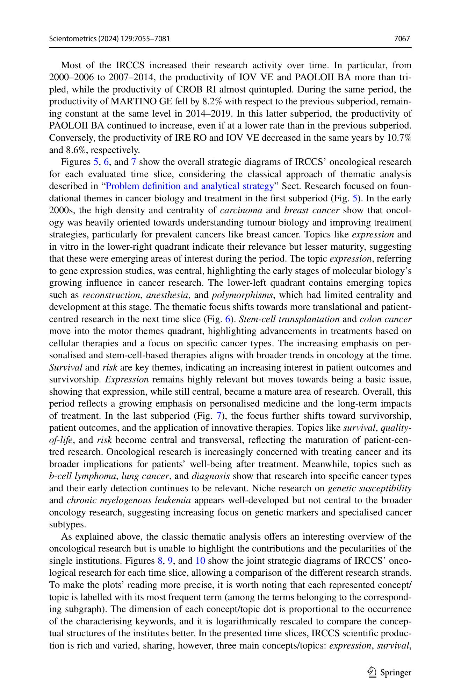

Figure 1
저자: Massimo Aria, Corrado Cuccurullo, Luca D'Aniello, Michelangelo Misuraca, Maria Spano | 날짜: 11/2024 | Journal: Scientometrics | DOI: 10.1007/s11192-024-05161-6
Figure 1
기존 co-word analysis 기반 strategic diagram을 메타데이터(저자, 기관, 지역 등)로 세분화하여 복수 관찰 단위의 conceptual structure를 하나의 joint representation에서 비교할 수 있는 "comparative science mapping" 기법을 제안한다. 이탈리아 9개 공공 종양학 IRCCS(연구-입원-의료기관)의 2000-2019년 WoS 논문 45,320편 중 상위 25% NCS 5,686편을 분석하여, 3개 시기별 기관별 연구 주제의 centrality-density 위치를 joint strategic diagram으로 시각화했다. 그 결과 expression, survival, chemotherapy가 공통 주요 주제이며, 시간에 따라 기초 종양생물학에서 환자 중심 연구(survival, quality-of-life)로 전환되는 패턴을 기관별로 비교 가능하게 보여주었다.

Figure 2

Figure 3

Figure 4

Figure 5
총평: Co-word analysis에 메타데이터 세분화를 결합한 comparative science mapping은 방법론적으로 견실하고 정책적 활용 가치가 높은 독창적 기여이나, joint strategic diagram의 시각적 복잡성과 단일 사례 의존이 일반화 가능성에 제약을 준다.